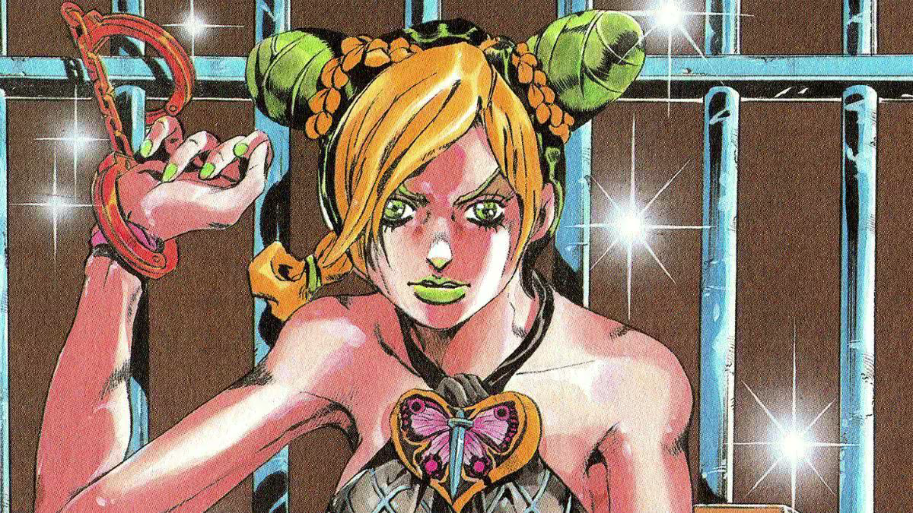

Nome: Jolyne Cujoh
Obra: JoJo's Bizarre Adventure: Stone Ocean
Criador: Hirohiko Araki
Ano de lançamento da obra: 1999
Jolyne Cujoh é a protagonista da sexta parte de JoJo's Bizarre Adventure, intitulada Stone Ocean. Ela é filha de Jotaro Kujo e faz parte da família Joestar. Jolyne é uma jovem determinada e corajosa que acaba sendo presa injustamente e enviada para a prisão Green Dolphin Street, na Flórida.
Durante sua permanência na prisão, Jolyne desperta seu Stand, Stone Free, que permite que ela transforme seu corpo em fios. A partir disso, ela começa a enfrentar diversos inimigos e descobre uma conspiração envolvendo Enrico Pucci e o legado de DIO. Sua importância na história está em ser a primeira protagonista feminina principal da série e em continuar a luta da família Joestar.
Jolyne nasceu como filha de Jotaro Kujo e de uma mulher norte-americana. Sua relação com o pai é complicada devido à ausência dele durante boa parte de sua infância. Aos 19 anos, ela é envolvida em um crime e acaba sendo condenada à prisão Green Dolphin Street.
Na prisão, Jolyne recebe um pingente de seu pai e, posteriormente, desperta seu Stand Stone Free. A partir desse momento, sua vida muda completamente: ela passa a enfrentar usuários de Stand e a lutar para proteger seu pai, além de impedir os planos de Enrico Pucci.